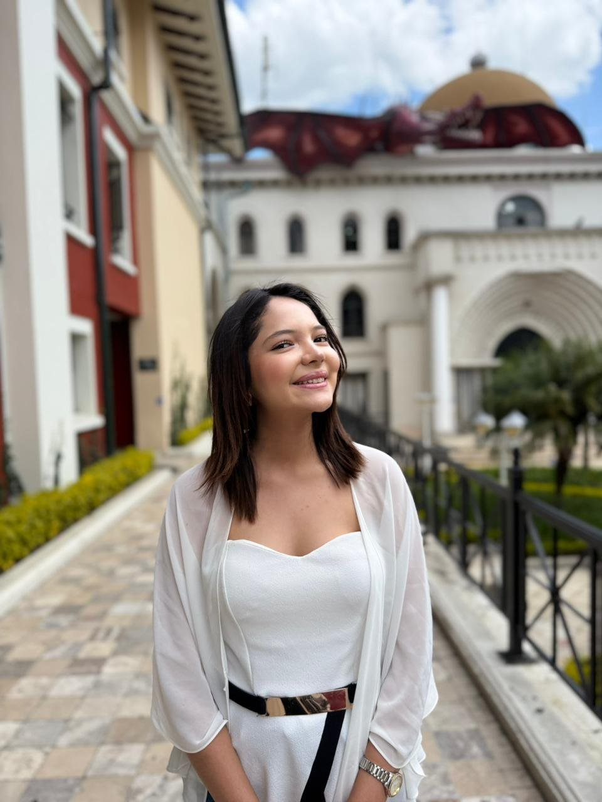
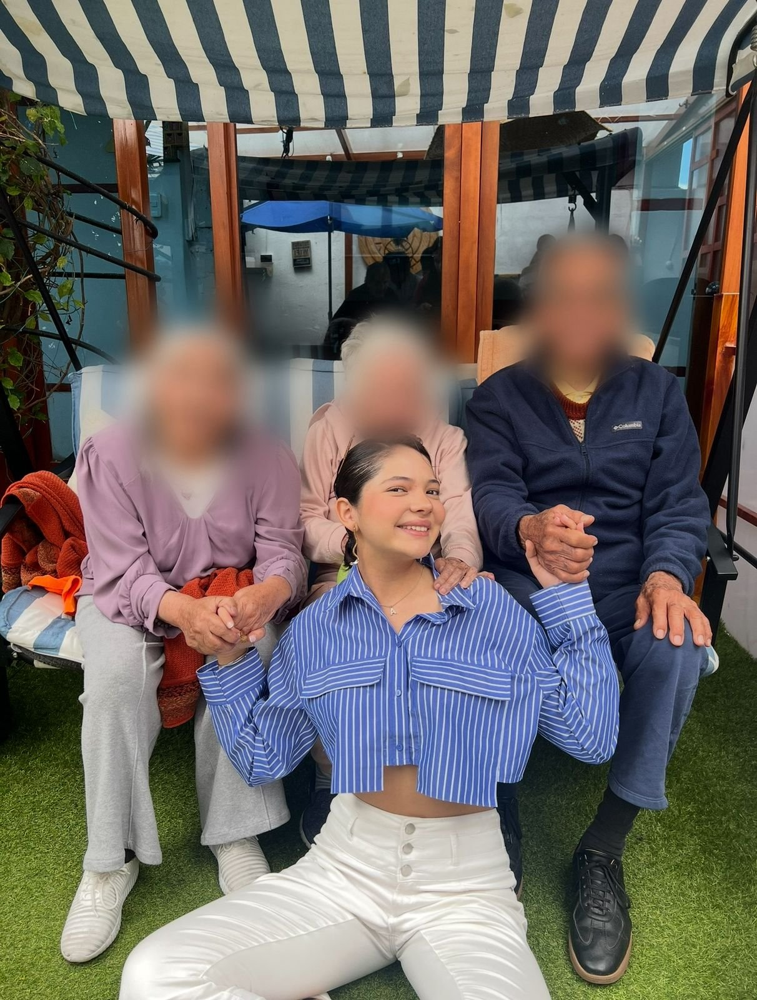
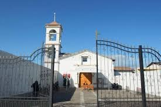
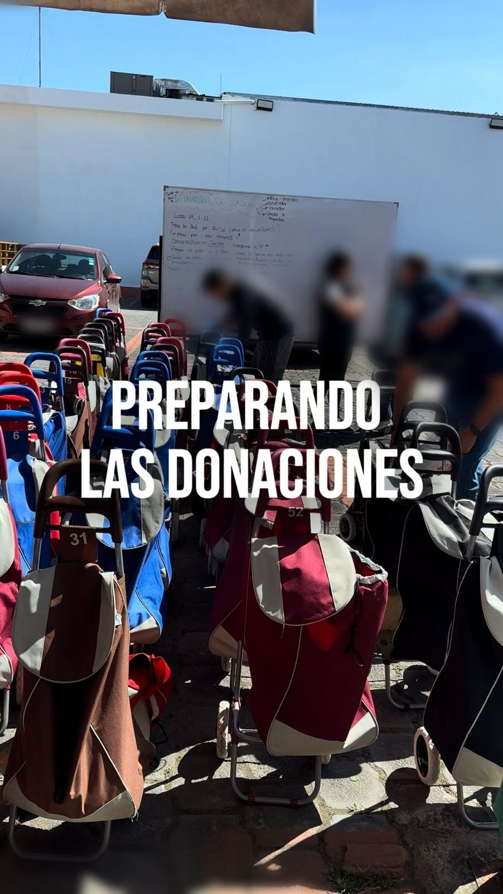
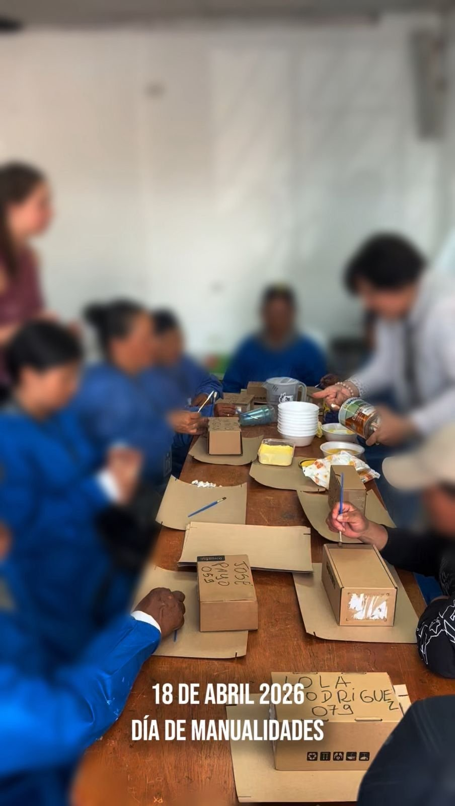
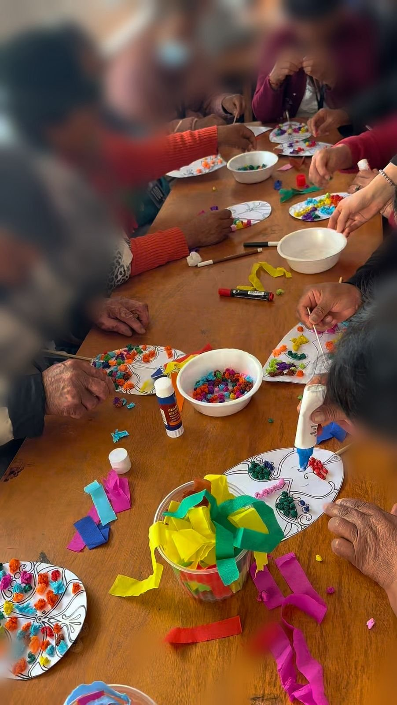
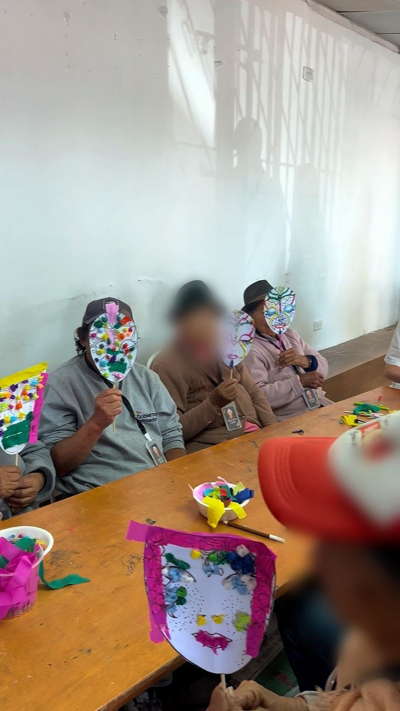
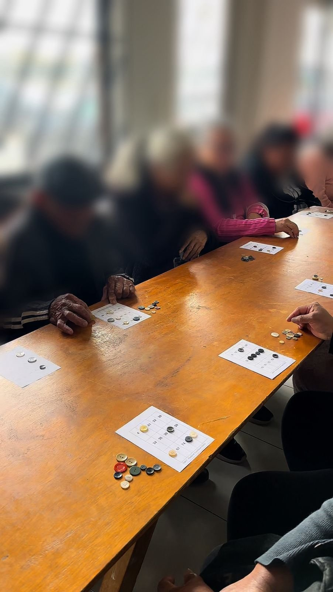
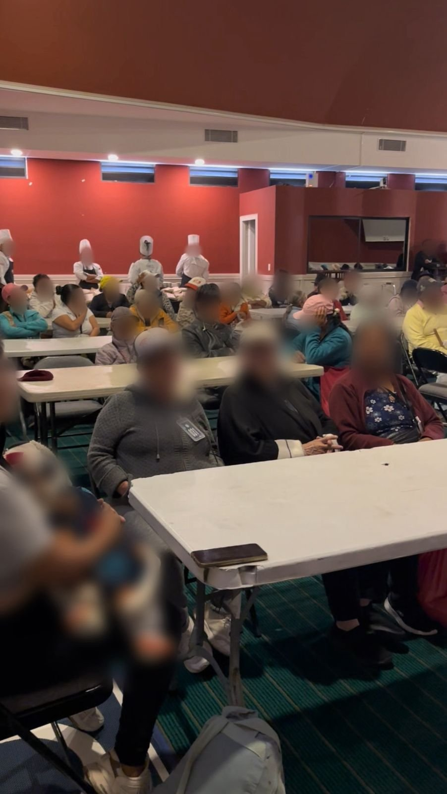

Alisson Robles · Código 00335727 · USFQ · Pastoral de Cumbayá


"El servicio no es un requisito; es un encuentro con lo más humano que existe."
Soy Alisson Robles, estudiante de Comunicación en la Universidad San Francisco de Quito. Durante este semestre fui parte de la clase de Aprendizaje y Servicio PASEC, una experiencia que me llevó mucho más allá de las aulas. Cada dos sábados me dirigí a la Fundación Pastoral Social de Cumbayá, donde compartí tiempo, actividades y momentos de genuina conexión humana con adultos mayores.
Lo que comenzó como un compromiso académico se convirtió en algo que llevo en el corazón: la certeza de que dar sin esperar nada a cambio es uno de los actos más transformadores que existen.
Una comunidad de fe y servicio que abre sus puertas cada quince días para recibir a los adultos mayores de la zona, brindarles atención, actividades, compañía y víveres.

La Pastoral de Cumbayá funciona en torno a la iglesia local. Cada persona que asiste lleva una tarjeta de identificación personal que le permite acceder a su propia mochila andadora numerada con víveres donados.
Yo siempre trabajé con el grupo de adultos mayores. Esa constancia me permitió construir vínculos reales, recordar sus historias, sus nombres, sus sonrisas. En cada jornada también se compartía un refrigerio con cada participante.
Cada sesión era diferente, pero todas tenían algo en común: el enfoque en la creatividad, la alegría y el bienestar de los adultos mayores.

Organizábamos las mochilas andadoras con víveres para cada adulto mayor según su tarjeta identificadora. Uno de los momentos más emotivos de cada jornada.

Los adultos mayores pintaron y decoraron cajas estimulando su motricidad fina y expresión artística. Cada persona le ponía su sello único y personal.

Creamos máscaras decorativas con papel de colores y figuras de tela. Al final la sala estalló en risas cuando todos posaron con sus creaciones.

Los participantes posaron orgullosos con sus obras. Un recordatorio poderoso de que la creatividad y el arte no tienen edad.

En lugar de fichas usamos botones de distintos colores. Concentración, risas y competencia amistosa que ejercitaba la memoria.
En cada jornada compartíamos un refrigerio. Ese momento alrededor de la mesa era quizás el más humano y genuino de todos.
El proyecto final del semestre fue el más significativo: llevamos a los adultos mayores en buses hasta el campus de la USFQ para vivir una tarde de cine juntos.
Voluntariedad total: cada adulto mayor otorgó su consentimiento. Quienes no quisieron participar simplemente no fueron. Nadie fue presionado ni condicionado. El servicio sin dignidad no es servicio.
Para muchos fue la primera vez que visitaban una universidad. Caminar por el campus y sentarse juntos a ver una película fue el broche perfecto para un semestre de encuentros genuinos.

El aprendizaje que más me marcó no fue un texto ni una presentación — fue la capacidad de conectar genuinamente con personas que viven una realidad completamente distinta a la mía.
Como estudiante de Comunicación, siempre había pensado en la comunicación como un proceso técnico: mensajes, canales, audiencias. Pero en la Pastoral de Cumbayá entendí que comunicar es, antes que todo, un acto de presencia.
Mi producto mejorado es precisamente esa habilidad: la capacidad de leer un entorno nuevo, adaptar mi lenguaje, mi velocidad, mi actitud, y encontrar puntos de conexión reales con adultos mayores que viven en condiciones de vulnerabilidad.
Cada sábado fue un ejercicio de observación activa y comunicación no verbal. Aprendí a leer qué actividades generaban alegría, cuándo alguien necesitaba más apoyo, cómo una sonrisa podía romper barreras que ningún discurso podría.
Este producto mejorado es intangible pero profundamente real: la competencia comunicativa construida desde la empatía y el servicio directo con la comunidad.
Aprendí que comunicar va más allá de las palabras. En cada jornada practiqué escucha activa, adaptación del lenguaje y lectura de contextos sociales. Aprendí a analizar una realidad distinta a la mía con ojos de comunicadora pero también de ser humano. Entendí que los mensajes más poderosos no siempre se dicen; se construyen en el silencio compartido, en la paciencia, en la presencia constante.
Fue relevante porque desafió mis esquemas previos. Yo estudiaba comunicación pensando en campañas, medios y plataformas digitales. El servicio me mostró que la comunicación más poderosa sucede entre dos personas, cara a cara, sin pantallas ni estrategias. Esa perspectiva amplió radicalmente mi visión de lo que significa ser comunicadora.
A nivel personal, me confrontó con mis propios privilegios y me hizo más consciente de realidades que existen fuera de mi burbuja. A nivel profesional, entendí que como futura comunicadora tengo una responsabilidad con las comunidades vulnerables: no solo producir contenido, sino hacerlo con enfoque humano, respeto a la dignidad y conciencia del impacto social de cada mensaje que construya.
De una definición teórica a una convicción vivida. Así evolucionó mi comprensión de lo que significa ser una ciudadana responsable.
"La ciudadanía responsable es la decisión consciente y sostenida de ver al otro — especialmente al más vulnerable — reconocer su dignidad y actuar en consecuencia. No es un conjunto de reglas que se cumplen, sino una forma de estar en el mundo que se construye en cada encuentro, en cada acto cotidiano, en cada momento en que elijo la empatía sobre la indiferencia."
Definí la ciudadanía socialmente responsable como actuar de manera ética, solidaria y comprometida con el bienestar colectivo, respetando los derechos humanos, el medio ambiente y las normas de convivencia, según la Constitución del Ecuador y marcos de la UNESCO.
Mi enfoque era principalmente ambiental y normativo: reciclar, ahorrar agua, respetar espacios públicos, votar informadamente. Entendía que no solo hay que exigir derechos sino también cumplir responsabilidades, pero lo veía de forma abstracta.
Era una definición informada y válida, pero construida desde el escritorio, no desde la experiencia directa con la comunidad.
Hoy entiendo la ciudadanía responsable como algo profundamente relacional: no se trata solo de cumplir normas o cuidar el ambiente, sino de ver al otro, reconocer su dignidad y actuar en consecuencia, especialmente con quienes son invisibilizados.
El servicio en la Pastoral me mostró que ser ciudadana responsable también significa estar presente de manera real en la vida de mi comunidad. Significa que mi carrera de Comunicación tiene una deuda con esas voces que raramente son escuchadas.
Es una definición que ya no vive solo en un documento, sino en mi forma de ver el mundo y de tomar decisiones.
Lo que cambió: antes veía la ciudadanía responsable como un conjunto de acciones individuales vinculadas principalmente al ambiente y al respeto de normas. Después del servicio, entiendo que su núcleo es la relación con el otro, especialmente con el más vulnerable. El cambio fue pasar de una ciudadanía de reglas a una ciudadanía de vínculos.
Por qué cambió: porque la experiencia concreta supera cualquier marco teórico. Cada sábado en la Pastoral yo no estaba aplicando definiciones, estaba construyendo relaciones. Y en esas relaciones entendí que la responsabilidad ciudadana es, ante todo, la responsabilidad de ver al otro como un igual en dignidad.
Lo que se mantuvo: se mantuvo la convicción de que cada acción individual tiene consecuencias colectivas, y que no debemos esperar únicamente que el gobierno resuelva los problemas sociales. Eso lo pensaba antes y lo sigo pensando, pero ahora lo entiendo de manera mucho más encarnada y urgente.
Por qué se mantuvo: porque esa idea es estructuralmente correcta y el servicio la confirmó. Vi con mis propios ojos cómo la acción voluntaria y constante de un grupo de jóvenes transforma concretamente la vida de personas mayores cada quince días. La acción individual sí importa, y mucho.
Estos valores no son principios que solo declaro — son convicciones que se forjaron o se profundizaron durante las 85 horas de servicio en la Pastoral de Cumbayá.
La empatía es el punto de partida de cualquier acción ciudadana genuina. Sin ella, el servicio se convierte en una transacción. Con ella, se convierte en un encuentro real. Como futura comunicadora, la empatía me permite construir mensajes que realmente llegan a las personas porque parten de entender su realidad.
Lo apliqué cada sábado al adaptar mi forma de comunicarme con cada adulto mayor: a sus ritmos, sus capacidades, sus historias. Cuando alguien no quería participar en una actividad, lo respetaba y buscaba otra forma de acompañarle. La empatía fue mi herramienta principal de trabajo durante todo el semestre.
El respeto a la dignidad humana es el fundamento de toda relación ética, especialmente con poblaciones vulnerables. En ciudadanía responsable, no basta con "ayudar": hay que hacerlo de manera que preserve y refuerce la dignidad de quien recibe el apoyo, no que la erosione o minimice.
Lo apliqué en el proyecto final, al garantizar que la visita a la USFQ fuera 100% voluntaria. Nadie fue presionado. También lo apliqué en las actividades diarias: nunca traté a los adultos mayores como receptores pasivos, sino como participantes activos, creativos y con voz propia.
La ciudadanía responsable no es un acto puntual sino una práctica continua. El compromiso sostenido es lo que transforma una buena intención en un impacto real. La constancia genera confianza y permite construir relaciones genuinas que van más allá del voluntariado ocasional.
Asistí a todas las jornadas del semestre sin faltar. Con el tiempo, los adultos mayores me reconocían, me saludaban por mi nombre y se sentían cómodos conmigo. Esa familiaridad solo fue posible por la constancia. Presentarse siempre es, en sí mismo, una forma poderosa de demostrar respeto.
Estos compromisos nacen directamente de lo vivido en la Pastoral de Cumbayá. Son específicos, medibles y están anclados en mi realidad como estudiante de Comunicación y futura profesional.
Al menos uno de mis proyectos por semestre incorporará investigación directa con una comunidad vulnerable. Mantendré un registro de las voces y fuentes que incluyo en mis trabajos para verificar diversidad de perspectivas.
Evaluaré cada proyecto profesional con una pregunta clave: ¿este trabajo respeta y visibiliza la dignidad de las personas que representa? Priorizaré trabajar con organizaciones cuyo impacto social sea positivo y medible.
Este semestre me hizo entender que la vulnerabilidad compartida es la base de toda conexión humana verdadera. Cada sábado que llegué a la Pastoral llegué con mis propios miedos y dudas, y los adultos mayores me recibieron con una calidez que no pedí pero que necesitaba.
Aprendí que el tiempo es el regalo más valioso. No los víveres, no las actividades planificadas, sino estar presente de verdad. Mirar a alguien a los ojos, recordar su nombre, preguntarle cómo está.
Como estudiante de Comunicación, salgo con una convicción clara: mi carrera tiene una responsabilidad social. Las historias que elija contar, las voces que decida amplificar, los mensajes que construya — todo tiene consecuencias reales en vidas reales. Y ese compromiso es exactamente lo que la PASEC quiere dejar en cada uno de nosotros.
Ponerse en el lugar del otro es una práctica cotidiana que se cultiva con presencia genuina y escucha activa, no un ejercicio intelectual.
Cada sesión me desafió a salir de mi zona de confort y a encontrar significado profundo en los momentos más pequeños y sencillos.
El conocimiento académico adquiere otro sentido cuando se pone al servicio de la comunidad. Eso es exactamente lo que PASEC me regaló.
Asamblea Constituyente del Ecuador. (2008). Constitución de la República del Ecuador. Gobierno del Ecuador. https://www.cancilleria.gob.ec/wp-content/uploads/downloads/2013/02/constitucion.pdf
Organización de las Naciones Unidas para la Educación, la Ciencia y la Cultura (UNESCO). (2026). Educación para la ciudadanía mundial y la paz. UNESCO. https://www.unesco.org/es/global-citizenship-peace-education
Organización de las Naciones Unidas para la Educación, la Ciencia y la Cultura (UNESCO). (2026). Lo que hay que saber sobre la educación para la ciudadanía mundial. UNESCO.
Organización Mundial de la Propiedad Intelectual (OMPI). (2008). Constitución de la República del Ecuador. WIPO Lex.
Instituto de la UNESCO para el Aprendizaje a lo Largo de Toda la Vida. (2025). Educación para la ciudadanía mundial. UNESCO.